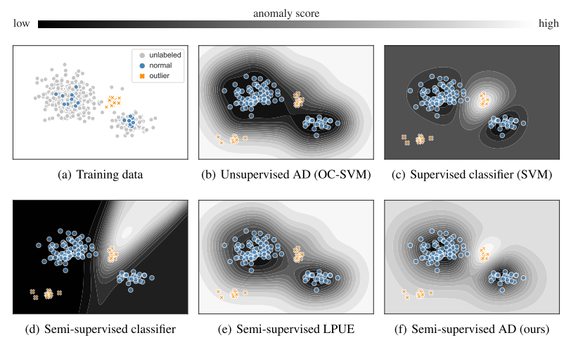
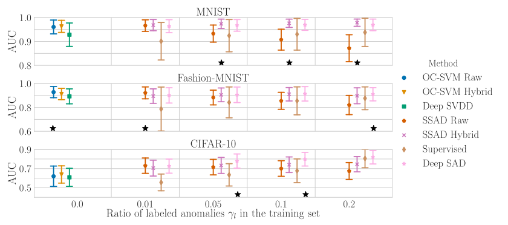
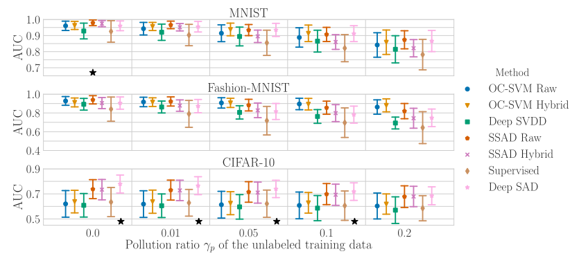
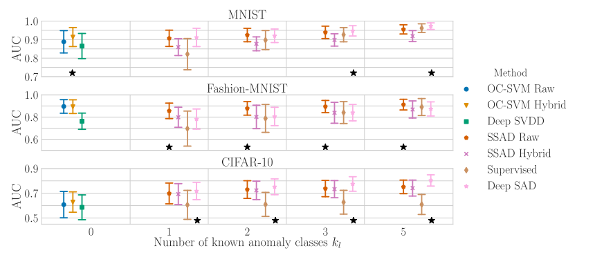

どんなもの？
小数のtraining data＋多数のunlabeled data＋少数の分布外データを利用して、見たことのない分布外データに対しての汎化能力を高める手法 DeepSAD を提案しました。
先行研究と比べてどこがすごい？
分布外検知（OOD; out-of-distribution） とは、訓練分布と異なるデータを検知するタスクです。本研究と先行研究との相違点を以下に示します。
| クラスラベルを利用 | クラスラベルを非利用 | |
|---|---|---|
| OODを利用 | ・Confidence-calibrated ・ODIN ・Prioe Networks ・Outlier exposure | Deep SAD（提案手法） |
| OODを非利用 | ・Learning Confidence ・OOD detection by MCD | ・DAGMM ・Geometric ・Deep SVDD ・OCGAN ・Multiple-Hypotheses ・Liklihood Ratios |
分布外のサンプルはそれぞれ異なる分布、つまりエントロピーが高くなるという正則化を利用して学習しました。
技術や手法のキモはどこにある？
エントロピー最大化
分布内データはエントロピーを最小化するように学習しています。逆に、分布外データはエントロピーを最大化するように学習したらいいのではというアイディアです。そのため、全体の objective function は以下で定義されます。
$$ \max_{p(z|x)} \mathcal{I}(\bf{X}; \bf{Z}) + \beta (\mathcal{H}\bf{Z}^- - \mathcal{H}(\bf{Z}^+)) $$
ここで、$\mathcal{I}(\cdot)$ は相互情報量、$\beta(\cdot)$ は分布外データのエントロピー、$\mathcal{H}(\cdot)$ は分布内データのエントロピーを表します。$\max(\cdot)$ がポイントです。
Object Detection
上記 objective function を object detection に落としたのが以下の式です。
$$ \min_\mathcal{W} \frac{1}{n+m} \sum_i^n ||\phi(\bf{x}_i; \mathcal{W})-\bf{c}||^2 + \frac{\eta}{n+m} \sum_j^m (||\phi(\bf{\tilde{x}}_j; \mathcal{W}) - \bf{c}||^2)^{\tilde{y}_j} + \frac{\lambda}{2}\sum_l^L ||\bf{W}^l||^2_FW $$
- $\phi(\cdot)$ はエンコーダ、$W$ は重みを表します。
- output space Z centered on a predetermined point c
- unlabeld data: $n$ 個あり、$x_i$
- labeld data: m個あり、$\bf{\tilde{x}}_j$
- ラベル $y$ は ${+1, -1}$ であり、$+1$ が正常、$-1$ が異常
どうやって有効だと検証した？
3つのシナリオで実験しました。あるクラスを分布内クラス、その他のクラスを分布外クラスとします。
- シナリオ1：ラベルありの分布外クラスを１つ利用し、訓練データとその割合 $γ_l$ を変化
- シナリオ2：ラベルありの分布外クラスを１つ利用し、訓練データとその割合を固定したまま、訓練データにラベルなしの分布外データが含まれる割合 $γ_p$ を変化
- シナリオ3：ラベルありの分布外クラスを複数利用し、そのクラスの数 $k_l$ を変化
シナリオ1
分布外クラスの割合 $γ_l$ が増加しても、提案手法は性能を維持。

シナリオ2
どの手法がよいかはデータセット依存。

シナリオ3

$γ_l=0.05, γ_p=0.1$ に固定。こちらもシナリオ2と同様、データセット依存であり、一概にどの手法がよいかは言えない。
議論はあるか？
- 半教師ありの分布外検知手法のため、広く適用可能できそうです。
- ある分布外データを利用し、別の分布外データに汎化できる手法は面白いです
- object function上で、labelとunlabelの扱いが同列なのだが、何か係数をかけたりはしないのでしょうか？
次に読むべき論文はあるか？
- [2020] Anomaly Detection by Latent Regularized Dual Adversarial Networks
- 分布外検知におけるGANベースの異常検知手法です。